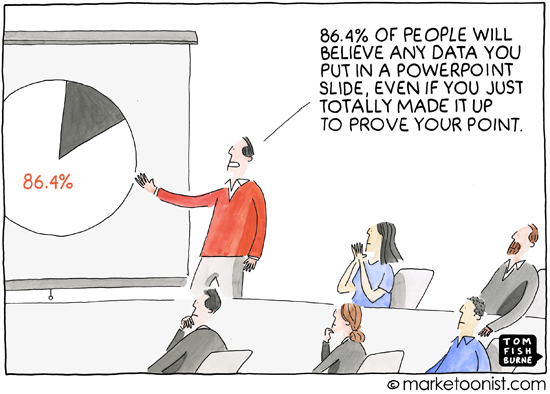
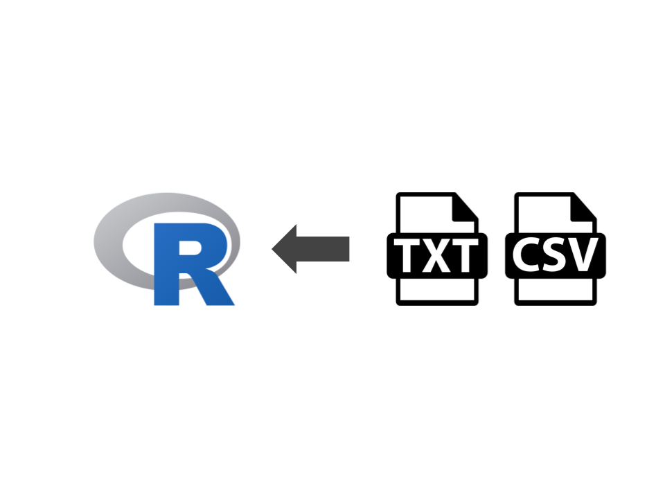

(…) o fato da Ciência de Dados existir como uma área se deve a uma falha colossal da estatística. Para mim, o que eu faço é o que é a estatística. É obter insights a partir dos dados utilizando modelagem e visualização. (Hadley Wickham)

Manipulação de Dados
A manipulação de dados refere-se à transformação de dados em informação relevante.
Parte de uma base “crua” e a transforma até obter uma base de dados analítica.
O ponto de partida dessa jornada se inicia na importação (ou leitura) dos dados.
Manipulação de Dados
Manipulação de Dados
O objetivo desta aula é introduzir os principais pacotes e funções para importar dados para o R.
Antes de começar…
É necessário ter acesso aos dados e conhecer o seu formato.
Os dados podem estar salvos tanto localmente, em um servidor remoto ou em uma página web.
Uma boa prática é evitar salvar um banco de dados com nomes separados por espaços.
Evite símbolos especiais no nome dos diretórios ou arquivos, tais como ?$%^&(){}[]<>/...
Organizando o diretório de trabalho
O diretório de trabalho (ou workspace) nada mais é do que a pasta no qual inserimos o conteúdo de um projeto.
Uma boa prática é criar uma pasta para cada projeto
Uma vez criado o diretório de trabalho, devemos indicar ao R qual o caminho até esta pasta
# Conhecendo o diretório de trabalhogetwd()# Definindo o diretório de trabalhosetwd("C:/Users/aviniciusbb/Documentos/ICDR") # No Windowssetwd("/home/aviniciusbb/Documentos/ICDR") # No Linux ou Mac# Listar objetos no diretório (duas opções)list.files()dir()
Preparando o Diretório de Trabalho
É possível definir no RStudio através da sequência:
Session > Set Working Directory > Choose Directory
Quizz #1
Crie um diretório no seu computador para os exercícios da aula.
Verifique o seu diretório de trabalho.
Mude o diretório de trabalho para o diretório que você criou.
Salve todos os arquivos de dados da aula no diretório criado.
Verifique o conteúdo do diretório.
05:00
Caminho absoluto vs. Caminho relativo
Existem duas maneiras de definir caminhos para um arquivo ou diretório - caminhos absolutos e caminhos relativos.
Um caminho relativo especifica um local a partir do local atual.
Um caminho absoluto especifica um local da raiz do sistema de arquivos.
Um projeto corresponde simplesmente a uma pasta no qual todos os elementos todos os arquivos estão associados: dados, documentos, imagens, scripts, …
O RStudio possibilita a criação de um ambiente que permite o uso mais integrado desses elementos.
Consiste na criação de um arquivo .Rproj dentro de um diretório de trabalho
É, também, uma maneira mais simples de evitar ajustar o diretório de trabalho sempre que começamos uma nova tarefa
Projetos no RStudio
A estrutura básica de um projeto é apresenta na árvore abaixo:
Projetos no RStudio
Para criar um novo projeto, fazemos:
File > New Project
Projetos no RStudio
Em seguida, indicamos o tipo específico de projeto. Em geral, criamos um projeto em um novo diretório
Projetos no RStudio
Por fim, damos um nome ao projeto (diretório) e indicamos onde estará localizado no computador:
Projetos no RStudio
É possível navegar entre projetos através do ícone do lado direito superior
Os arquivos apresentados no painel referem-se aos arquivos do diretório onde o projeto foi criado
Todos os caminhos dentro de um projeto são relativos!
Os arquivos e scripts previamente utilizados são restaurados ao abrir um projeto
Leitura de Dados
O pacote readr
O pacote readr oferece algumas funcionalidades que facilitam a leitura de dados no formato retangular
O pacote readr
As principais funções são:
read_delim(): arquivos separados por qualquer delimitador
read_csv(): arquivos separados por vírgula
read_csv2(): arquivos separados por ponto-e-vírgula
read_tsv(): arquivos delimitados por Tab
read_fwf(): arquivos com colunas de tamanho fixo
read_table(): arquivos delimitados por espaço em branco
De forma geral, todas as funções são casos especiais da função geral read_delim()
Alguns exemplos
O arquivo abaixo apresenta delimitação por Tabs
Alguns exemplos
O arquivo abaixo apresenta delimitação por vírgulas (comma separated values - CSV)
Alguns exemplos
O arquivo abaixo apresenta delimitação por ponto e vírgula (;)
Ler arquivos .txt ou .csv
Arquivos .txt são arquivos padrões de texto, enquanto que arquivos .csv são arquivos geralmente separados por vírgula (,) ou ponto-e-vírgula (;).

A função a ser utilizada para ler os dados depende da forma em que as variáveis estão delimitadas.
Importar arquivos .txt
Para arquivos .txt simples, utilizamos a função básica read_delim():
# Sintaxe da funcao library(readr)meus_dados <-read_delim(file ="meu_arquivo.txt")
Ler arquivos .txt ou .csv
Alguns argumentos da função são:
delim: indica qual o caracter usado para separar as colunas.
col_names = TRUE ou FALSE: indica se a primeira linha contém o nome das variáveis
col_types: indica o tipo da variável. Se col_type = NULL (default), as variáveis são imputadas automaticamente.
skip: indica quantas linhas devem ser ignoradas no começo do arquivo
trim_ws: elimina espaços em branco desnecessários antes e depois do valor da variável
Ver mais opções através de vignette("readr")
Importar arquivos .txt
Neste exemplo, vamos ler os dados participantes_tab.txt através da função read_delim():
# Ler dadosparticipantes <- readr::read_delim(file ="Dados/participantes_tab.txt", delim ="\t", show_col_types =FALSE )participantes## # A tibble: 6 × 4## Nome Idade Sexo Cidade ## <chr> <dbl> <chr> <chr> ## 1 Maria 45 F "João Pessoa " ## 2 João 32 M "Campina Grande"## 3 Francisco 18 M "Sapé" ## 4 Alice 17 F "Mariz" ## 5 Martin 22 M "Areia" ## 6 Dora 32 F "Conde"
Importar arquivos .txt
Para este exemplo, utilizaremos um arquivo que usa | como separador:
# Abrir dados individuos_alt <-read_delim("Dados/participantes_barra.txt", delim ="|" )individuos_alt## # A tibble: 6 × 4## Nome Idade Sexo Cidade ## <chr> <dbl> <chr> <chr> ## 1 Maria 45 F João Pessoa ## 2 João 32 M Campina Grande## 3 Francisco 18 M Sapé ## 4 Alice 17 F Mariz ## 5 Martin 22 M Areia ## 6 Dora 32 F Conde
Neste caso, o delimitador de variáveis é o caractere |. Na verdade, qualquer caractere utilizado para separar valores das variáveis deve ser indicado no argumento delim.
Uma característica interessante das funções do pacote readr é o fato de lerem diretamente arquivos compactados (.gz, .bz2, .xz, .rar ou .zip)
Importar arquivos .csv
Para ler arquivos .csv, podemos utilizar a mesma função read_delim(), com o argumento delim = ",". No entanto, a função read_csv() lê os dados diretamente:
Considere agora ler um arquivo .csv diretamente de uma página na internet (URL). Os dados apresentam informações sobre o número de queimadas
# URL da página url <-"https://queimadas.dgi.inpe.br/queimadas/portal-static/csv_estatisticas/historico_regiao_norte.csv"# Importando os dadosqueimadas_norte_br <-read_csv(url, show_col_types =FALSE)# Checar dimensões da base de dadosdim(queimadas_norte_br)
Função similar é read_csv2(). A diferença é que esta considera colunas separadas por ponto-e-vírgula (;), enquanto que read_csv() considera a separação por vírgula (,).
A principal função para leitura é a read_excel(). Tal função identifica se a extensão do arquivo é .xls ou .xlsx.
# Instalar pacoteinstall.packages("readxl")library(readxl)# Sintaxe da funcaodata <-read_excel(path, sheet =NULL, range =NULL, skip =0 )
Caso se conheça o formato exato do arquivo, pode-se utilizar as funcões read_xls() ou read_xlsx().
Lendo arquivos Microsoft Excel
Para este exemplo, utilizaremos os dados de Frotas de Veículos por municípios para o último trimestre de 2022. A série histórica está disponível na página do Ministério da Infraestrurura
# Converter para data framejson_df <-as.data.frame(json_data)json_df## ID Name Salary StartDate Dept## 1 1 Rick 623.30 1/1/2012 IT## 2 2 Dan 515.20 9/23/2013 Operations## 3 3 Michelle 611.00 11/15/2014 IT## 4 4 Ryan 729.00 5/11/2014 HR## 5 5 Gary 843.25 3/27/2015 Finance## 6 6 Nina 578.00 5/21/2013 IT## 7 7 Simon 632.80 7/30/2013 Operations## 8 8 Guru 722.50 6/17/2014 Finance
O pacote haven
O pacote haven possibilita a leitura e escrita de vários formatos de dados dos principais pacotes estatísticos disponíveis, tais como SPSS, SAS e Stata.
Atualmente, suporta os seguintes arquivos:
SAS: read_sas(), read_xpt() e write_xpt()
SPSS: read_sav() e write_sav()
Stata: read_dta() lê arquivos .dta (até a versão 15), enquanto write_dta() cria arquivos .dta (versões 8-15).
O termo web scraping refere-se à prática de coleta de dados web, permitindo a extração de dados diretamente de sites e convertendo-os em informação estruturada para posterior análise.
Web scraping
No R, existem três pacotes principais para a extração de dados da web:
httr: realiza requisições web para obtenção das páginas de interesse
xml2: estrutura arquivos HTML ou XML de forma eficiente
rvest: reune funcionalidade dos dois pacotes anteriores e traz funções específicas
É importante ter conhecimento prévio de HTML
Web scraping
Como exemplo, gostaríamos de baixar os dados da tabela do campeonato brasileiro de 2022.
Para salvar uma base de dados do R em um único arquivo, utilizamos a função write_rds(). O objeto pode ser lido através da função read_rds().
# Salvar um objeto em um arquivosave_rds(objeto, file ="meus_dados.rds")# Restaurar o objetowrite_rds(file ="meus_dados.rds")
Por exemplo, podemos salvar o objeto mtcars em um arquivo ‘.rds’:
# Salvar um objeto em um arquivowrite_rds(mtcars, file ="mtcars.rds")# Restaurar o objetoread_rds(file ="mtcars.rds")
Salvando múltiplos objetos
Para salvar múltiplos objetos em um único arquivo, utilizamos a função save(). O objeto será salvo no formato .Rda ou .RData (mesma extensão). Os objetos podem ser restaurados através da função load()
# Salvar um objeto no formato .RDatasave(data1, file ="data.Rda")# Salvar multiplos objetossave(data1, data2, file ="data.Rda")# Carregar os dadosload("data.Rda")
Salvando todo o workspace
Para salvar todos os dados e scripts de um projeto, utilizamos a função save.image(). Sempre ao finalizar o R/RStudio, ele pergunta se gostaríamos de salvar o workspace. Se a resposta for afirmativa, da próxima vez que abrirmos o programa todo o workspace será carregado.
# Salvar o workspacesave.image(file ="meu_workspace.Rda")# Carregar o workspaceload("meu_workspace.Rda")